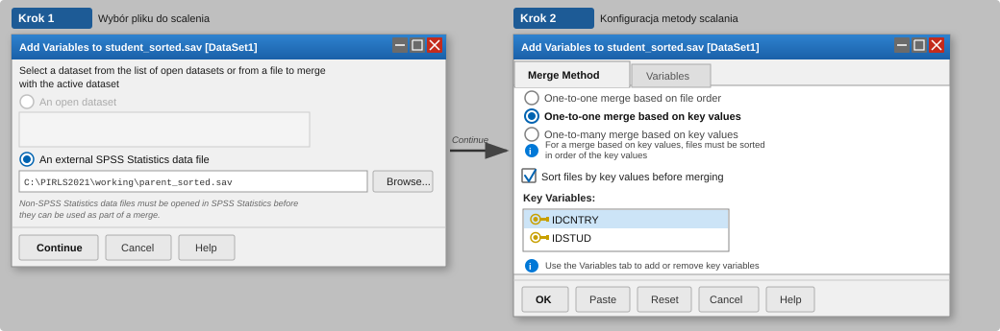
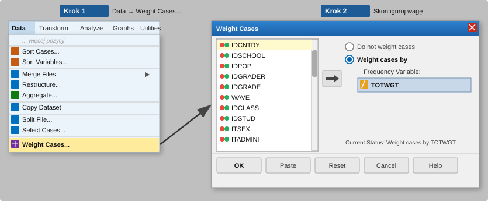
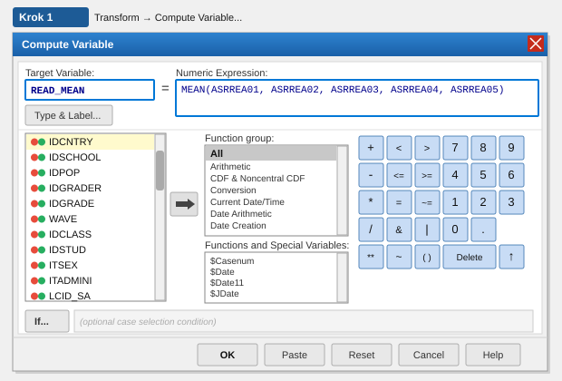
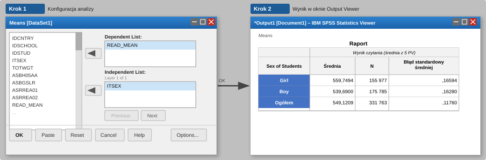
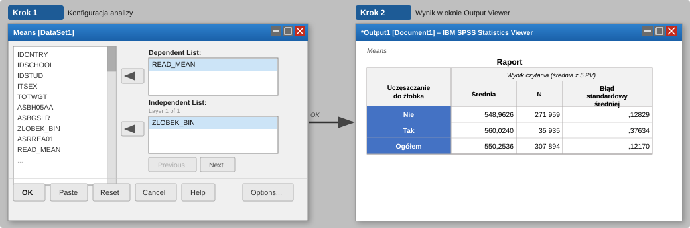
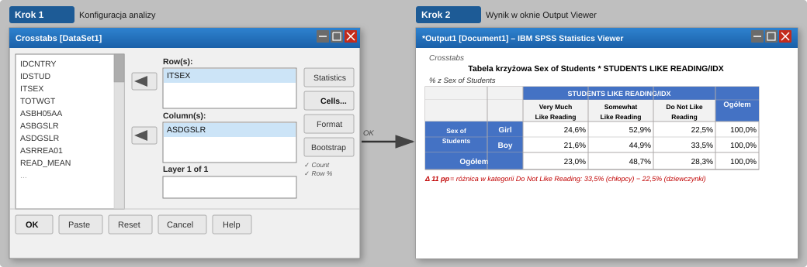

Analiza danych z badań międzynarodowych w SPSS na przykładzie PIRLS 2021
1 Wprowadzenie
W tym poradniku pokazujemy, jak korzystać z programu SPSS do pracy z danymi z międzynarodowych badań edukacyjnych. Opiera się on na przykładach z badania PIRLS 2021 (Progress in International Reading Literacy Study), które mierzy umiejętności czytania ze zrozumieniem wśród uczniów klasy czwartej. Badania tego rodzaju organizują dwie główne instytucje: IEA (International Association for the Evaluation of Educational Achievement), odpowiedzialne m.in. za TIMSS, PIRLS, ICCS i ICILS oraz OECD, które prowadzi np. PISA, TALIS i PIAAC.
Poradnik jest przeznaczony dla osób, które chcą sprawnie zapoznać się z danymi, przygotować zmienne do analizy i uzyskać pierwsze wyniki opisowe. Nie wymaga zaawansowanej znajomości statystyki. Jego celem jest pokazanie, co można zrobić w SPSS wygodnie i poprawnie na etapie przygotowania danych, a także wskazanie momentu, w którym warto sięgnąć po narzędzia zaprojektowane specjalnie do analizy danych z badań IEA i OECD.
2 Dlaczego SPSS jest przydatny w tych danych?
Dane PIRLS, podobnie jak dane z innych międzynarodowych badań edukacyjnych, są dostępne w formacie .sav, natywnym formacie SPSS. Po otwarciu pliku wszystkie etykiety zmiennych i wartości są od razu widoczne – to jedna z wyraźnych zalet pracy w SPSS, który oferuje zarówno czytelny interfejs graficzny, jak i możliwość pracy ze składnią (ang. syntax). Strukturę zbioru można szybko przejrzeć, sprawdzić rozkłady odpowiedzi, połączyć pliki z różnych kwestionariuszy oraz przygotować zmienne do dalszej analizy bez konieczności instalowania dodatkowych pakietów czy dodatkowej obróbki pliku.
SPSS przydaje się szczególnie do:
- otwierania i przeglądania plików
.savz etykietami - łączenia plików z różnych kwestionariuszy (uczeń, szkoła, nauczyciel)
- dołączania polskich pytań krajowych do bazy międzynarodowej
- sprawdzania braków danych i rozkładów zmiennych
- rekodowania zmiennych i tworzenia prostych wskaźników
- obliczania sum i średnich z kilku pozycji kwestionariuszowych
- wstępnych tabel i wykresów eksploracyjnych
- przygotowania pliku wynikowego do dalszej analizy
SPSS dobrze sprawdza się jako pierwsze narzędzie w pracy z tymi danymi – pozwala szybko zorientować się w strukturze zbioru, ocenić jakość danych i przygotować zmienne do właściwych analiz. Gdy jednak chcemy sprawdzić, czy różnice między grupami uczniów są statystycznie istotne, standardowe procedury SPSS mają znaczące ograniczenia wynikające ze specyfiki tych danych. Choć OECD udostępnia specjalne makra SPSS umożliwiające poprawne obliczenia, ich obsługa jest znacznie bardziej złożona niż użycie narzędzi lub pakietów dedykowanych, takich jak IEA IDB Analyzer, Rrepest, repest lub intsvy. Poradniki do tych narzędzi znajdziesz na stronach IBE-PIB: ibe.edu.pl/pl/dane/jak-analizowac-dane.
| Zadanie | SPSS | Narzędzie dedykowane |
|---|---|---|
| Wczytywanie i przeglądanie plików | ✔ | ✔ |
| Łączenie plików kwestionariuszy | ✔ | ✔ |
| Rekodowanie zmiennych | ✔ | ✔ |
| Eksploracyjne tabele i wykresy | ✔ | ✔ |
| Obliczanie odsetków z wagą | ✔ | ✔ |
| Punktowe oszacowanie średnich z PV | ✔ | ✔ |
| Poprawne błędy standardowe | ✘ | ✔ |
| Testowanie różnic między grupami | ✘ | ✔ |
| Pełna analiza wyników testowych (PV) | ✘ | ✔ |
Aby świadomie korzystać z powyższego podziału ról, warto zrozumieć, skąd właściwie wynikają te ograniczenia. Specyfika międzynarodowych badań edukacyjnych opiera się na trzech filarach metodologicznych, które znacząco zmieniają sposób podejścia do analizy statystycznej.
3 Specyfika danych z badań międzynarodowych
Dane z badań takich jak PIRLS, TIMSS czy PISA różnią się od typowych zbiorów ankietowych pod trzema istotnymi względami. Poniżej przedstawiamy te cechy skrótowo, żeby uzasadnić wybory pojawiające się w dalszej części poradnika: dlaczego stosujemy WEIGHT BY, dlaczego wyniki ze standardowych procedur SPSS wymagają ostrożnej interpretacji oraz skąd bierze się kilka wyników dla każdego ucznia.
3.1 Wagi analityczne: dlaczego stosujemy WEIGHT BY
W PIRLS szkoły są dobierane z prawdopodobieństwem proporcjonalnym do ich wielkości, a następnie w każdej wylosowanej szkole do badania przystępuje jeden lub dwa oddziały. Taki sposób doboru sprawia, że poszczególne szkoły mają różne szanse trafienia do próby. Bez zastosowania wag wyniki analiz nie odzwierciedlają wartości populacyjnych dla uczniów czwartej klasy.
Aby temu zaradzić, każdemu uczniowi przypisana jest waga analityczna informująca, ilu uczniów w populacji dana osoba reprezentuje. W PIRLS 2021 jest to zmienna TOTWGT. Wagę aktywujemy poleceniem WEIGHT BY TOTWGT lub przez menu Data → Weight Cases….
WEIGHT BY, żeby wyniki były reprezentatywne
Użycie WEIGHT BY TOTWGT jest niezbędne, aby obliczone średnie i odsetki odpowiadały wartościom populacyjnym. Bez wagi wyniki mogą być zniekształcone przez nadreprezentację szkół dużych lub małych, nierównomierną stopę zwrotu kwestionariuszy i szereg innych czynników wynikających ze schematu doboru próby.
3.2 Złożony schemat doboru próby: dlaczego SPSS raportuje inne wartości błędów standardowych
Uczniowie w PIRLS nie są losowani pojedynczo z całej populacji. Najpierw losowane są szkoły, a następnie oddziały. Ponieważ uczniowie z tej samej szkoły lub oddziału są zwykle do siebie bardziej podobni niż uczniowie z różnych szkół, standardowe procedury SPSS zakładające całkowitą niezależność obserwacji zaniżają błędy standardowe, przedziały ufności i wartości p względem metod stosowanych w badaniach międzynarodowych.
Do poprawnego szacowania niepewności oszacowań stosuje się wagi replikacyjne, czyli zestawy dodatkowych wag odzwierciedlających zmodyfikowane wersje próby. Pozwalają one uwzględnić niepewność wynikającą ze złożonego doboru próby. Brak wbudowanej obsługi wag replikacyjnych jest jednym z głównych ograniczeń SPSS w pracy z danymi z badań międzynarodowych.
Standardowe procedury SPSS nie wspierają analizy danych opartej na wagach replikacyjnych, dlatego generowane przez nie błędy standardowe, przedziały ufności i wartości p w wynikach publikacyjnych należy zastępować wartościami z narzędzi dedykowanych badaniom międzynarodowym. W analizach eksploracyjnych wyniki SPSS mogą służyć jako punkt orientacyjny.
3.3 Wartości prawdopodobne: skąd bierze się kilka zmiennych wynikowych
W tradycyjnym teście każdy uczeń odpowiada na wszystkie pytania i dostaje jeden wynik. W badaniach takich jak PIRLS zadań jest jednak zbyt wiele, żeby jeden uczeń mógł odpowiedzieć na wszystkie w czasie przeznaczonym na badanie – każdy widzi więc tylko wylosowany podzestaw zadań. Żeby mimo to oszacować wynik ucznia na pełnej skali, stosuje się metody statystyczne, które zamiast jednej liczby dają kilka wartości prawdopodobnych, oznaczanych skrótem PV (ang. plausible values).
Dla wyników czytania w PIRLS 2021 jest to pięć zmiennych: ASRREA01, ASRREA02, ASRREA03, ASRREA04 i ASRREA05. W innych badaniach liczba PV może być różna – w PISA i PIAAC stosuje się ich dziesięć.
Średnia z PV może być użyteczna w eksploracji danych, ale nie powinna być podstawą analiz raportowych, takich jak regresja, korelacje czy statystyczne porównania grup. Do takich analiz należy stosować narzędzia obsługujące PV zgodnie z metodologią badań międzynarodowych – IDB Analyzer, Rrepest, repest lub intsvy.
4 Dane PIRLS 2021: pobieranie i organizacja plików
Zanim zaczniemy pracę w programie SPSS, trzeba pobrać odpowiednie pliki i uporządkować je na dysku. Warto od razu rozróżnić dwa typy materiałów. Pierwszym są publiczne bazy międzynarodowe udostępniane przez IEA – zawierają dane ze wszystkich krajów uczestniczących w badaniu i są dostępne bezpłatnie w repozytorium IEA. Drugim są materiały krajowe: każdy kraj uczestniczący w badaniu może zadać respondentom dodatkowe pytania, nieobecne w części międzynarodowej. Niektóre kraje udostępniają odpowiedzi na takie pytania publicznie. IBE-PIB udostępnia polskie pytania krajowe jako osobne zbiory, które można połączyć z bazą międzynarodową przy użyciu wspólnych identyfikatorów.
4.1 Skąd pobrać dane
Dane PIRLS 2021 są dostępne bezpłatnie na stronie repozytorium IEA: www.iea.nl/data-tools/repository/pirls
Pobierz pliki w formacie SPSS (.sav). Razem z danymi pobierz dokumentację techniczną, szczególnie User Guide i codebook, które opisują nazwy zmiennych, kody odpowiedzi i identyfikatory potrzebne do łączenia plików.
Jeśli interesują Cię polskie dane uzupełnione o pytania krajowe, znajdziesz je w repozytorium IBE-PIB: www.ibe.edu.pl/pl/dane/gdzie-znalezc-dane-i-narzedzia-badawcze/pirls-dane-z-badan
4.2 Struktura folderów
Przed rozpoczęciem pracy warto przygotować przejrzystą strukturę folderów. Pozwoli to zachować kontrolę nad kolejnymi etapami pracy i zminimalizuje ryzyko przypadkowego nadpisania oryginalnych danych.
PIRLS2021/
├─ raw/ # oryginalne pliki pobrane z IEA, nie modyfikuj
├─ working/ # pliki robocze tworzone w SPSS
├─ syntax/ # zapisana składnia .sps
└─ output/ # tabele i wykresy4.3 Nazwy plików IEA
Pliki PIRLS są podzielone tematycznie – każdy kwestionariusz to osobny plik, odrębny dla każdego kraju. Pliki są nazwane według schematu [typ][kraj][cykl].sav. Dla Polski w PIRLS 2021:
| Plik | Zawartość |
|---|---|
asgpolr5.sav |
Kwestionariusz ucznia i wyniki |
ashpolr5.sav |
Kwestionariusz rodzica |
acgpolr5.sav |
Kwestionariusz dyrektora szkoły |
atgpolr5.sav |
Kwestionariusz nauczyciela |
asapolr5.sav |
Odpowiedzi na poszczególne zadania |
astpolr5.sav |
Powiązania uczniów z nauczycielami |
asppolr5.sav |
Paradata: czasy odpowiedzi i dane procesowe (tylko digitalPIRLS) |
Prefiks określa typ danych: asg = uczeń, ash = rodzic, acg = szkoła, atg = nauczyciel, asa = odpowiedzi na zadania, ast = powiązania uczeń–nauczyciel, asp = paradata.
Kod kraju pol to Polska. Kod cyklu r5 to PIRLS 2021.
Plik asgpolr5.sav zawiera zarówno dane z kwestionariusza ucznia, jak i wartości prawdopodobne (PV) oraz wagę TOTWGT – wszystko czego potrzeba do podstawowych analiz. To do niego dołączamy dane z pozostałych plików.
5 Wczytywanie i przeglądanie danych w SPSS
5.1 Otwarcie pliku i pierwsze spojrzenie na dane
Pliki PIRLS otwieramy standardowo przez File → Open → Data… lub składnią:
GET FILE='C:\PIRLS2021\raw\asgpolr5.sav'.Po otwarciu SPSS wyświetla etykiety zmiennych i wartości od razu w zakładkach Data View i Variable View – bez potrzeby wykonywania dodatkowych kroków.
Każdą operację warto zapisać w pliku składni (.sps). Składnię otwierasz przez File → New → Syntax. Uruchamiasz ją, zaznaczając blok kodu i klikając zieloną strzałkę Run.
Dobrą praktyką jest wstępne sprawdzenie struktury pliku zaraz po wczytaniu. Szybki sposób to kliknięcie prawym przyciskiem myszy na nagłówek kolumny np. IDCNTRY i wybranie Descriptive Statistics.
Jeśli plik zawiera dane wyłącznie dla Polski, wynik pokaże jedną wartość (616) wraz z liczbą obserwacji – w próbie polskiej PIRLS 2021 jest to 4179 uczniów. W przypadku pliku wielokrajowego widoczna będzie lista wszystkich krajów.
5.2 Sprawdzenie zmiennych identyfikacyjnych
W każdym pliku IEA znajdują się zmienne techniczne i identyfikacyjne służące do łączenia danych. Poniżej przedstawiono najważniejsze z nich – nie wszystkie występują w każdym pliku, ale warto je znać przed przystąpieniem do łączenia zbiorów.
| Zmienna | Opis |
|---|---|
IDCNTRY |
Kod kraju (616 dla Polski) |
IDSCHOOL |
Identyfikator szkoły |
IDCLASS |
Identyfikator klasy |
IDSTUD |
Identyfikator ucznia |
IDTEALIN |
Identyfikator nauczyciela (w pliku ast i atg) |
TOTWGT |
Waga główna ucznia |
JKZONE |
Strefa jackknife (do szacowania błędów standardowych) |
JKREP |
Wskaźnik replikacji (0 lub 1) |
Zmienne JKZONE i JKREP to zmienne replikacyjne – jak opisano w rozdziale 3, w standardowych procedurach SPSS nie korzystamy z nich bezpośrednio. W dedykowanych narzędziach analitycznych, takich jak IDB Analyzer czy Rrepest, są one uwzględniane automatycznie.
6 Łączenie plików danych
Dane PIRLS są podzielone na osobne pliki dla każdego kwestionariusza – jak omówiono w rozdziale 4.3. W celu przeanalizowania na przykład związku między wykształceniem rodziców a wynikami ucznia, należy połączyć plik uczniowski z plikiem rodziców. Łączenie odbywa się poziomo – dodajemy nowe zmienne do istniejących wierszy. Liczba obserwacji (uczniów) pozostaje taka sama; zestaw zmiennych się rozszerza.
Identyfikatory uczniów, szkół i nauczycieli są unikalne w obrębie kraju, ale nie w całej bazie – ta sama wartość IDSTUD może pojawić się w danych z dwóch różnych państw. Dlatego przy każdym łączeniu zawsze podajemy IDCNTRY jako pierwszy klucz:
- Uczeń ↔︎ szkoła:
IDCNTRY+IDSCHOOL - Uczeń ↔︎ nauczyciel (przez AST):
IDCNTRY+IDTEALIN - Uczeń ↔︎ rodzic / pytania krajowe:
IDCNTRY+IDSTUD
6.1 Łączenie pliku uczniowskiego z plikiem rodzica
Procedura łączenia w SPSS wymaga, żeby oba pliki były posortowane według tych samych zmiennych kluczowych. W PIRLS kluczami łączenia ucznia z rodzicem są IDCNTRY i IDSTUD – każdy kwestionariusz rodzica jest przypisany do konkretnego ucznia. Plik uczniowski to asgpolr5.sav, a plik rodzica to ashpolr5.sav.
Krok 1: posortuj plik uczniowski i zapisz:
GET FILE='C:\PIRLS2021\raw\asgpolr5.sav'.
SORT CASES BY IDCNTRY IDSTUD.
SAVE OUTFILE='C:\PIRLS2021\working\student_sorted.sav'.Krok 2: posortuj plik rodzica i zapisz:
GET FILE='C:\PIRLS2021\raw\ashpolr5.sav'.
SORT CASES BY IDCNTRY IDSTUD.
SAVE OUTFILE='C:\PIRLS2021\working\parent_sorted.sav'.Krok 3: połącz pliki:
Przez menu: otwórz student_sorted.sav jako aktywny plik danych, a następnie: Data → Merge Files → Add Variables…
W oknie dialogowym wskaż plik parent_sorted.sav jako plik zewnętrzny. W polu Key Variables dodaj IDCNTRY i IDSTUD. Zaznacz opcję Match cases on key variables in sorted files. Kliknij OK.
MATCH FILES
/FILE='C:\PIRLS2021\working\student_sorted.sav'
/TABLE='C:\PIRLS2021\working\parent_sorted.sav'
/BY IDCNTRY IDSTUD.
EXECUTE.
SAVE OUTFILE='C:\PIRLS2021\working\student_parent.sav'.
Tak powstała baza – z danymi uczniowskimi uzupełnionymi o odpowiedzi rodziców – posłuży nam w dalszej pracy jako punkt wyjścia do przykładowych analiz w rozdziale 8.Po łączeniu sprawdź, czy liczba wierszy jest taka sama jak przed łączeniem. Jeśli wzrosła, oznacza to problem z kluczami łączenia, najczęściej niezgodność typów zmiennych (numeryczny vs. tekstowy). Plik rodzica (ash) zawiera jeden wiersz na ucznia, więc po poprawnym łączeniu liczba obserwacji powinna pozostać bez zmian (dla Polski: 4 179 uczniów).
6.2 Dołączanie danych nauczyciela
Pliki uczniowski (asg) i nauczycielski (atg) nie mają wspólnego identyfikatora – nie można ich połączyć bezpośrednio. Rolę pomostu pełni plik powiązań ast, który zawiera zarówno identyfikatory uczniów, jak i nauczycieli. W Polsce każdy uczeń ma jednego nauczyciela języka polskiego, więc ast ma tyle samo wierszy co plik uczniowski i łączenie przebiega tak samo jak z innymi plikami.
Zaczynamy od asg i dołączamy do niego ast na kluczu IDCNTRY + IDSTUD – dzięki temu w zbiorze pojawia się IDTEALIN. Następnie do tego pliku dołączamy atg na kluczu IDCNTRY + IDTEALIN.
* Krok 1: do pliku uczniowskiego dołącz identyfikator nauczyciela.
GET FILE='C:\PIRLS2021\raw\asgpolr5.sav'.
SORT CASES BY IDCNTRY IDSTUD.
SAVE OUTFILE='C:\PIRLS2021\working\asg_sorted.sav'.
GET FILE='C:\PIRLS2021\raw\astpolr5.sav'.
SORT CASES BY IDCNTRY IDSTUD.
SAVE OUTFILE='C:\PIRLS2021\working\ast_sorted.sav'.
MATCH FILES /FILE='C:\PIRLS2021\working\asg_sorted.sav'
/TABLE='C:\PIRLS2021\working\ast_sorted.sav'
/BY IDCNTRY IDSTUD.
EXECUTE.
SAVE OUTFILE='C:\PIRLS2021\working\asg_ast.sav'.
* Krok 2: dołącz dane z kwestionariusza nauczyciela.
GET FILE='C:\PIRLS2021\working\asg_ast.sav'.
SORT CASES BY IDCNTRY IDTEALIN.
SAVE OUTFILE='C:\PIRLS2021\working\asg_ast_sorted.sav'.
GET FILE='C:\PIRLS2021\raw\atgpolr5.sav'.
SORT CASES BY IDCNTRY IDTEALIN.
SAVE OUTFILE='C:\PIRLS2021\working\atg_sorted.sav'.
MATCH FILES /FILE='C:\PIRLS2021\working\asg_ast_sorted.sav'
/TABLE='C:\PIRLS2021\working\atg_sorted.sav'
/BY IDCNTRY IDTEALIN.
EXECUTE.
SAVE OUTFILE='C:\PIRLS2021\working\student_teacher.sav'.Jeśli planujesz analizy z użyciem zmiennych nauczycielskich, IDB Analyzer połączy wszystkie pliki automatycznie – bez ręcznego sortowania i tworzenia plików pośrednich. Ręczne łączenie w SPSS ma sens głównie wtedy, gdy chcesz pozostać w jednym narzędziu przez cały etap przygotowania danych.
6.3 Dołączanie pytań krajowych
Każdy kraj uczestniczący w PIRLS może zadać respondentom dodatkowe pytania, nieobecne w części międzynarodowej. IBE-PIB udostępnia polskie pytania krajowe jako osobny zbiór, który łączymy z bazą międzynarodową kluczami IDCNTRY i IDSTUD: www.ibe.edu.pl/pl/dane/gdzie-znalezc-dane-i-narzedzia-badawcze/pirls-dane-z-badan
GET FILE='C:\PIRLS2021\working\student_parent.sav'.
SORT CASES BY IDCNTRY IDSTUD.
SAVE OUTFILE='C:\PIRLS2021\working\main_sorted.sav'.
GET FILE='C:\PIRLS2021\raw\PIRLS2021_PL_National.sav'.
SORT CASES BY IDCNTRY IDSTUD.
SAVE OUTFILE='C:\PIRLS2021\working\national_sorted.sav'.
MATCH FILES
/FILE='C:\PIRLS2021\working\main_sorted.sav'
/TABLE='C:\PIRLS2021\working\national_sorted.sav'
/BY IDCNTRY IDSTUD.
EXECUTE.
SAVE OUTFILE='C:\PIRLS2021\working\pirls_poland_full.sav'.7 Przygotowanie zmiennych
Zanim uruchomimy właściwe analizy, musimy przygotować dwie zmienne robocze. W tym rozdziale aktywujemy wagę, pokazujemy przykład rekodowania zmiennej z polskiej bazy krajowej oraz obliczamy wynik czytania READ_MEAN. Pozostałe zmienne używane w rozdziale 8 – ASBH05AA i ASBGSLR – są dostępne bezpośrednio w pliku student_parent.sav i nie wymagają dodatkowego przygotowania.
7.1 Sprawdzanie braków danych
W plikach PIRLS braki danych są z reguły już zadeklarowane w formacie .sav i widoczne w kolumnie Missing w zakładce Variable View. Jeśli mimo to jakaś wartość oznaczająca brak odpowiedzi wyświetla się jako poprawna kategoria, można ją zadeklarować ręcznie:
MISSING VALUES ASBG05A (9).7.2 Włączanie wagi analitycznej
Przed przystąpieniem do analiz należy aktywować wagę główną TOTWGT, aby uzyskiwane wyniki odpowiadały wartościom populacyjnym.
Przez menu: Kliknij Data → Weight Cases…, zaznacz opcję Weight cases by i przesuń zmienną TOTWGT do pola Frequency Variable. Kliknij OK. W dolnym prawym rogu okna SPSS pojawi się napis Weight On, który potwierdza, że waga jest aktywna.

* Włączenie wagi głównej.
WEIGHT BY TOTWGT.
* ... tutaj Twoje analizy ...
* Wyłączenie wagi po zakończeniu.
WEIGHT OFF.Po uruchomieniu WEIGHT BY SPSS stosuje wagę we wszystkich kolejnych procedurach aż do zamknięcia pliku lub do uruchomienia WEIGHT OFF. Zawsze kończ blok analiz ważonych poleceniem WEIGHT OFF.
TOTWGT sumuje się do liczebności populacji (w Polsce ~330 000 uczniów), co sprawia, że SPSS traktuje próbę 4 000 osób jak badanie całej populacji i generuje drastycznie zawyżone statystyki F i wartości p. Jeśli korzystasz ze standardowych testów istotności w SPSS, użyj zamiast niej wagi HOUWGT – daje te same wartości średnich i odsetków, ale zachowuje rzeczywistą liczebność próby, przez co wyniki testów są mniej mylące. Nie oznacza to jednak, że HOUWGT jest poprawną wagą do analiz publikacyjnych – służy jedynie do ograniczenia artefaktów wynikających ze standardowych procedur SPSS.
7.3 Rekodowanie zmiennych
Zmienne z baz PIRLS często wymagają przekształcenia przed analizą – na przykład scalenia kilku kategorii w jedną lub utworzenia zmiennej zero-jedynkowej. IDB Analyzer nie daje możliwości tworzenia nowych zmiennych ani rekodowania – operacje tego rodzaju trzeba wykonać wcześniej w SPSS lub innym środowisku, a dopiero potem załadować gotowy plik do IDB. SPSS jest tu szczególnie przydatny dzięki intuicyjnemu interfejsowi i bezpośredniej obsłudze plików .sav.
Poniższy przykład pokazuje rekodowanie zmiennej ASXH05A z polskiej bazy krajowej (PIRLS2021_PL_National.sav). Zmienna ma sześć kategorii:
- 1 = Nie chodziło
- 2 = Niecały rok
- 3 = Jeden rok
- 4 = Dwa lata lub więcej
- 9 = Brak odpowiedzi lub odpowiedź niekompletna
- 98 = Brak z powodu nieuczestnictwa
Przekodowujemy ją na zmienną zero-jedynkową – chodziło do żłobka (1) lub nie (0):
Przez menu: Transform → Recode into Different Variables… Ustaw ASXH05A jako zmienną wejściową, podaj nazwę nowej zmiennej ZLOBEK_BIN i zdefiniuj mapowanie wartości w oknie Old and New Values.
RECODE ASXH05A
(1=0) (2=1) (3=1) (4=1) (ELSE=SYSMIS)
INTO ZLOBEK_BIN.
VARIABLE LABELS ZLOBEK_BIN 'Uczęszczanie do żłobka'.
VALUE LABELS ZLOBEK_BIN 1 'Tak' 0 'Nie'.
EXECUTE.Wynik rekodowania można od razu zweryfikować, porównując rozkłady obu zmiennych:
FREQUENCIES VARIABLES=ASXH05A ZLOBEK_BIN.Odpowiednik zmiennej ASXH05A w bazie międzynarodowej to ASBH05AA, która jest już zapisana w postaci dychotomicznej (tak/nie) i nie pozwala odróżnić czasu trwania opieki. Polskie pytanie krajowe zostało rozbudowane: zamiast jednej kategorii „tak” wyróżniono trzy warianty według długości uczęszczania, co umożliwia bardziej szczegółową analizę – na przykład zbadanie, czy długość pobytu w żłobku wiąże się z wynikami czytania.
Przeglądając dokumentację pytań krajowych, warto za każdym razem sprawdzić, czy dane polskie nie oferują bogatszego pomiaru niż wersja międzynarodowa.
7.4 Obliczanie zmiennej READ_MEAN (średnia z PV)
Zmienną wynikową READ_MEAN obliczamy jako średnią arytmetyczną z pięciu wartości prawdopodobnych (ASRREA01–ASRREA05).
Przez menu: Transform → Compute Variable… W polu Target Variable wpisz READ_MEAN. W polu Numeric Expression wpisz MEAN(ASRREA01, ASRREA02, ASRREA03, ASRREA04, ASRREA05). Kliknij OK.

COMPUTE READ_MEAN = MEAN(ASRREA01, ASRREA02, ASRREA03, ASRREA04, ASRREA05).
VARIABLE LABELS READ_MEAN 'Przybliżony wynik czytania (średnia z 5 PV)'.
EXECUTE.Wartości prawdopodobne nie są zaprojektowane jako dokładne wyniki pojedynczych uczniów – to narzędzie do wnioskowania o populacji, nie o jednostce. READ_MEAN jest więc z założenia przybliżeniem wyniku konkretnego ucznia: odzwierciedla jego prawdopodobny poziom umiejętności, nie zaś wynik „zmierzony” z pełną precyzją.
Dla prostych średnich grupowych ograniczeniem nie jest samo oszacowanie punktowe, lecz błędy standardowe i testy istotności.
8 Przykładowe analizy krok po kroku
W poniższej sekcji przedstawiono kilka typowych analiz opartych na danych PIRLS 2021 dla Polski. Każdy przykład zawiera: cel analizy, ścieżkę przez menu graficzne SPSS, odpowiadającą jej składnię oraz wskazówkę dotyczącą interpretacji wyników. Wykorzystujemy plik student_parent.sav (uczeń połączony z rodzicem, rozdział 6.1) oraz obliczoną zmienną READ_MEAN, zgodnie z opisem w poprzednim rozdziale. W przykładzie 8.2 korzystamy dodatkowo ze zmiennej ZLOBEK_BIN zrekodowanej z pytania krajowego ASXH05A w rozdziale 7.3.
8.1 Wyniki czytania według płci
Cel analizy: Porównanie wyników czytania dziewcząt i chłopców. Wyniki średnich odpowiadają danym przedstawionym w Tabeli 5.5 krajowego raportu PIRLS 2021 (s. 65) i zostaną odtworzone w tym przykładzie.
Zmienną zależną jest READ_MEAN – Wynik czytania obliczony jako średnia z pięciu wartości PV. Zmienną niezależną jest ITSEX, czyli płeć ucznia: 1 = dziewczynka, 2 = chłopiec.
Przez menu: Analyze → Compare Means and Proportions → Means… Przesuń READ_MEAN do pola Dependent List, a ITSEX do pola Independent List. Kliknij OK.

WEIGHT BY TOTWGT.
MEANS TABLES=READ_MEAN BY ITSEX
/CELLS=MEAN COUNT SEMEAN.
WEIGHT OFF.Jak czytać wyniki? Procedura MEANS zwraca tabelę z kolumnami: średnia, N oraz błąd standardowy średniej. Średnia pokazuje wynik czytania w danej grupie, a N odpowiada ważonej liczbie uczniów w populacji, nie liczebności próby.
Średnie grupowe uzyskane tą metodą są zgodne z raportem krajowym: dziewczynki uzyskują około 559,75 punktu, a chłopcy około 539,69 punktu. Różnica wynosi więc około 20 punktów na korzyść dziewczynek. Oznacza to, że w danych PIRLS 2021 dziewczynki osiągały przeciętnie wyższe wyniki czytania niż chłopcy.
Błędy standardowe widoczne w tabeli SPSS są znacznie niższe niż poprawne wartości z raportu krajowego. Dzieje się tak dlatego, że standardowa procedura MEANS nie uwzględnia wag replikacyjnych i złożonego schematu doboru próby. Dodatkowo użycie TOTWGT sprawia, że SPSS traktuje ważoną próbę jak populację, co dodatkowo zawyża precyzję oszacowań.
Wartości średnich można traktować jako poprawne oszacowania punktowe i wykorzystywać do eksploracji danych. Do oceny istotności różnicy między dziewczynkami a chłopcami należy jednak użyć narzędzi dedykowanych, takich jak IEA IDB Analyzer, Rrepest, repest lub intsvy.
8.2 Wyniki czytania a uczęszczanie do żłobka
Cel analizy: Sprawdzenie, czy uczniowie, którzy uczęszczali do żłobka, osiągają wyższe wyniki czytania. Jako zmiennej niezależnej używamy ZLOBEK_BIN (1 = Tak, 0 = Nie) – zmiennej zrekodowanej w rozdziale 7.3 z pytania krajowego ASXH05A.
Ponieważ ZLOBEK_BIN pochodzi z polskiej bazy krajowej, a nie z pliku student_parent.sav, przed analizą należy dołączyć bazę krajową do naszego pliku roboczego. Procedura jest analogiczna do opisanej w rozdziale 6.3: otwieramy student_parent.sav, sortujemy według IDCNTRY i IDSTUD, a następnie dołączamy zmienne z pliku PIRLS2021_PL_National.sav posortowanego według tych samych kluczy.
GET FILE='C:\PIRLS2021\working\student_parent.sav'.
SORT CASES BY IDCNTRY IDSTUD.
SAVE OUTFILE='C:\PIRLS2021\working\student_parent_sorted.sav'.
GET FILE='C:\PIRLS2021\raw\PIRLS2021_PL_National.sav'.
SORT CASES BY IDCNTRY IDSTUD.
SAVE OUTFILE='C:\PIRLS2021\working\national_sorted.sav'.
MATCH FILES
/FILE='C:\PIRLS2021\working\student_parent_sorted.sav'
/TABLE='C:\PIRLS2021\working\national_sorted.sav'
/BY IDCNTRY IDSTUD.
EXECUTE.
SAVE OUTFILE='C:\PIRLS2021\working\student_parent_pl.sav'.Zmienną zależną jest READ_MEAN, zmienną niezależną – ZLOBEK_BIN.
Przez menu: Analyze → Compare Means and Proportions → Means… Przesuń READ_MEAN do pola Dependent List, a ZLOBEK_BIN do pola Independent List. Kliknij OK.

WEIGHT BY TOTWGT.
MEANS TABLES=READ_MEAN BY ZLOBEK_BIN
/CELLS=MEAN COUNT SEMEAN.
WEIGHT OFF.Jak czytać wyniki? W tabeli wynikowej pojawią się dwa wiersze: jeden dla uczniów, którzy uczęszczali do żłobka (ZLOBEK_BIN = 1), i jeden dla tych, którzy nie uczęszczali (ZLOBEK_BIN = 0). Kolumna Mean pokazuje wynik czytania w każdej grupie.
Uczniowie, którzy uczęszczali do żłobka, osiągają przeciętnie wyższe wyniki czytania. Różnicę należy interpretować ostrożnie: uczęszczanie do żłobka jest silnie powiązane ze statusem społeczno-ekonomicznym rodziny i innymi zmiennymi, dlatego surowa różnica w średnich nie musi odzwierciedlać przyczynowego wpływu opieki żłobkowej.
8.3 Nastawienie uczniów do czytania a płeć – rozkład kategorii
Cel analizy: Porównanie rozkładu nastawienia do czytania między dziewczynkami a chłopcami. Zmienna ASDGSLR to wskaźnik kategoryczny (Students Like Reading Index) przyjmujący trzy wartości: 1 = Very Much Like Reading, 2 = Somewhat Like Reading, 3 = Do Not Like Reading. Zmienną niezależną jest ITSEX (płeć ucznia).
Analiza korzysta z bazy student_parent.sav przygotowanej w rozdziale 6.1.
Przez menu: Analyze → Descriptive Statistics → Crosstabs… Przesuń ITSEX do pola Row(s) i ASDGSLR do pola Column(s). Kliknij Cells…, zaznacz Row w sekcji Percentages, następnie Continue i OK.

WEIGHT BY TOTWGT.
CROSSTABS
/TABLES=ITSEX BY ASDGSLR
/CELLS=COUNT ROW.
WEIGHT OFF.Jak czytać wyniki? Odsetki w tabeli sumują się do 100% w każdym wierszu (% z Sex of Students), co pozwala porównać rozkład nastawienia do czytania między dziewczynkami a chłopcami niezależnie od liczebności grup.
Wyniki ujawniają wyraźną różnicę: w kategorii Do Not Like Reading znalazło się 22,5% dziewczynek i aż 33,5% chłopców – różnica 11 punktów procentowych. Chłopcy rzadziej też deklarowali, że bardzo lubią czytać (21,6% vs 24,6%). Tak duże różnice w nastawieniu do czytania są spójne z różnicami w wynikach testu opisanymi w sekcji 8.1 i stanowią ważny kontekst interpretacyjny dla tych danych.
9 Dobre praktyki pracy z danymi w SPSS
Nie modyfikuj oryginalnych plików. Dane surowe trzymaj w osobnym folderze i nigdy ich nie nadpisuj. Wszystkie operacje wykonuj na kopiach roboczych.
Zapisuj składnię. Tabelki i wykresy wygenerowane przez menu nie zostawiają śladu. Zapisana składnia pozwala odtworzyć każdy krok.
Sprawdzaj dokumentację zmiennych. Nazwy zmiennych zmieniają się między cyklami badania. Przed każdą analizą upewnij się, że używasz aktualnych nazw.
Kontroluj braki. Zanim użyjesz zmiennej, sprawdź zakres wartości i kody braków w Variable View albo przez
FREQUENCIES.Włączaj wagę świadomie. Stosuj
WEIGHT BYprzed analizą iWEIGHT OFFpo niej. Sprawdź, czy na pasku stanu widnieje napis Weight On przed uruchomieniem procedury.Wartości p i błędy standardowe z SPSS służą wyłącznie orientacji. W analizach eksploracyjnych można je traktować jako sygnał, czy warto dane zjawisko zbadać głębiej. W wynikach publikacyjnych należy używać wartości z IDB Analyzer lub Rrepest.
Weryfikuj wyniki. Porównuj uzyskane odsetki i średnie z oficjalnymi raportami krajowymi, żeby upewnić się, że dane są poprawnie wczytane.
9.1 Najczęstsze błędy
Poniższe problemy pojawiają się regularnie podczas pracy z danymi z badań międzynarodowych w SPSS. Warto je znać, zanim wystąpią.
Liczba wierszy wzrosła po łączeniu plików. Oznacza to błąd w kluczach łączenia. Najczęstsza przyczyna to niezgodność typów zmiennych klucza (np. numeryczny w jednym pliku i tekstowy w drugim) albo pominięcie IDCNTRY przy łączeniu – SPSS dopasowuje wtedy uczniów z różnych krajów o tym samym IDSTUD. Rozwiązanie: sprawdź typy zmiennych w Variable View i upewnij się, że oba pliki są posortowane według tych samych kluczy przed MATCH FILES.
Waga pozostała włączona z poprzedniej analizy. Jeśli WEIGHT OFF zostało pominięte, każda kolejna procedura nadal korzysta z wagi. Sprawdź pasek stanu SPSS – napis Weight On oznacza aktywną wagę. W dobrych praktykach każdy blok analizy powinien kończyć się komendą WEIGHT OFF.
TOTWGT daje ogromne N w tabeli. To oczekiwane zachowanie – waga skaluje wyniki do poziomu populacji (dla Polski ok. 330 tys. czwartoklasistów). Kolumna N w ważonej tabeli to nie liczebność próby. Do oceny rzeczywistej liczebności próby w analizach eksploracyjnych można użyć niezważonej FREQUENCIES.
Zmienna ma braki zakodowane jako kategorie liczbowe. Wartości takie jak 9, 99 lub 998 mogą oznaczać „brak odpowiedzi”, ale SPSS traktuje je jako dane, jeśli nie zostały zadeklarowane jako missing. Skutkuje to zawyżonymi lub błędnymi wynikami. Przed każdą analizą należy sprawdzić kodebook i zadeklarować braki w Variable View → Missing.
Pliki nie są posortowane przed łączeniem. MATCH FILES z opcją BY wymaga, żeby oba pliki były posortowane według zmiennych kluczowych w tej samej kolejności. Brak sortowania powoduje błędne dopasowania bez żadnego komunikatu o błędzie.
Pomylono plik asg z asa lub innym. W PIRLS asg to plik uczniowski, ash – rodzicielski, acg – szkolny, asa – plik z odpowiedziami na poszczególne zadania. Załadowanie złego pliku często nie powoduje błędu – po prostu brakuje zmiennych lub dane wyglądają dziwnie. Zawsze weryfikuj zawartość nowo otwartego pliku przez Data → Variable View.
Wartości błędów standardowych nie zgadzają się z raportem. Różnice rzędu 10–20 razy między SE z SPSS a SE z raportu krajowego lub międzynarodowego są normalnym efektem braku obsługi wag replikacyjnych i zawyżonej precyzji przy stosowaniu TOTWGT (zob. rozdział 3.2). W wynikach publikacyjnych należy zawsze podawać SE obliczone narzędziami dedykowanymi.
10 Podsumowanie
SPSS jest przydatnym narzędziem na etapie przygotowania i wstępnej eksploracji danych z badań międzynarodowych. Intuicyjny interfejs graficzny i natywna obsługa formatu .sav sprawiają, że dobrze sprawdza się do wczytywania danych, łączenia plików, dołączania pytań krajowych, sprawdzania rozkładów zmiennych, rekodowania oraz tworzenia prostych wizualizacji.
Rekomendowane podejście polega na przygotowaniu i eksploracji danych w SPSS, a następnie wykonaniu właściwych analiz populacyjnych w narzędziach dedykowanych: IEA IDB Analyzer, Rrepest, repest lub intsvy. Taki dwuetapowy model pracy pozwala wykorzystać wygodę SPSS na etapie przygotowania danych, a jednocześnie zachować poprawność metodologiczną wyników końcowych. Dobrą praktyką jest weryfikowanie wyników opisowych przez porównanie z oficjalnymi raportami krajowymi lub wynikami z IDB Analyzer, co pozwala potwierdzić poprawność wczytania i przygotowania danych. Dzięki temu SPSS pozostaje wygodnym punktem startu, a narzędzia dedykowane zapewniają poprawność metodologiczną wyników końcowych.
11 Zasoby i literatura
11.1 Gdzie pobrać dane
- PIRLS i TIMSS: www.iea.nl/data-tools/repository
- ICCS i ICILS: www.iea.nl/data-tools/repository
- PISA: www.oecd.org/pisa/data
- TALIS: www.oecd.org/en/about/programmes/talis.html#data
- PIAAC: www.oecd.org/skills/piaac/data
- SSES (Survey on Social and Emotional Skills): www.oecd.org/en/about/programmes/sses.html
- Polskie pytania krajowe i dane IBE-PIB: www.ibe.edu.pl/pl/dane
11.2 Dokumentacja techniczna
- Fishbein, B., Yin, L., & Foy, P. (2024). PIRLS 2021 User Guide for the International Database (2nd ed.). Boston College. pirls2021.org/data
- Fishbein, B., Taneva, M., & Kowolik, K. (2025). TIMSS 2023 User Guide for the International Database. Boston College. timss2023.org/data
- OECD (2023). PISA 2022 Technical Report. OECD Publishing. www.oecd.org/pisa/data/2022database
11.3 Narzędzia dedykowane do analiz z PV i wagami replikacyjnymi
Do poprawnego szacowania błędów standardowych, testowania różnic między grupami i pełnej analizy wyników testowych z wartościami prawdopodobnymi niezbędne są narzędzia zaprojektowane specjalnie do pracy z danymi z badań IEA i OECD. Dla każdego z nich IBE-PIB przygotował dedykowany poradnik dostępny pod podanym linkiem.
IEA IDB Analyzer – program graficzny z interfejsem okienkowym, generujący składnię SPSS, SAS lub R; obsługuje wszystkie badania IEA oraz PISA. Nie wymaga znajomości programowania.
Pobieranie: www.iea.nl/data-tools/tools
Poradnik IBE-PIB: ibe.edu.pl/pl/dane/jak-analizowac-dane/idb-analyzerRrepest – pakiet R opracowany przez OECD; obsługuje PISA, PIAAC, TALIS i SSES. Umożliwia elastyczne analizy regresji, średnich i percentyli z pełną obsługą PV i wag replikacyjnych.
CRAN: cran.r-project.org/package=Rrepest
Poradnik IBE-PIB: ibe.edu.pl/pl/dane/jak-analizowac-dane/rrepestintsvy – pakiet R obsługujący szerokie spektrum badań (PIRLS, TIMSS, PISA, PIAAC, ICILS i inne); umożliwia obliczanie średnich, odsetków, korelacji i modeli regresji z wagami replikacyjnymi.
CRAN: cran.r-project.org/package=intsvy
Poradnik IBE-PIB: ibe.edu.pl/pl/dane/jak-analizowac-dane/intsvyrepest – komenda do programu Stata opracowana przez OECD; obsługuje PISA, PIAAC i TALIS. Avvisati, F., & Keslair, F. (2014).
Poradnik IBE-PIB: ibe.edu.pl/pl/dane/jak-analizowac-dane/stata-repest